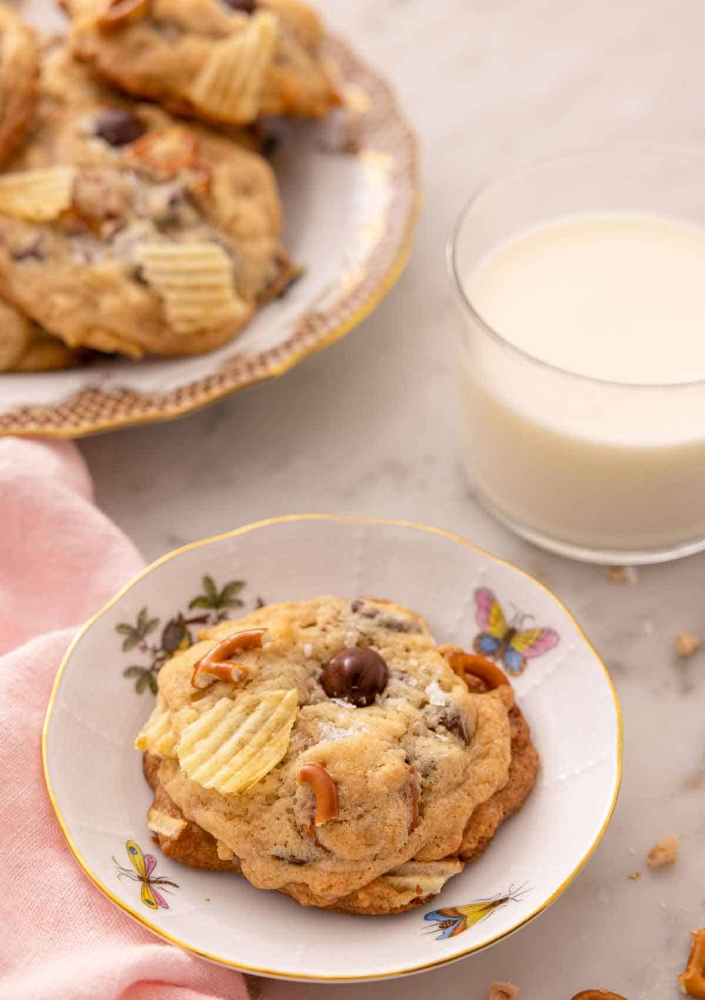
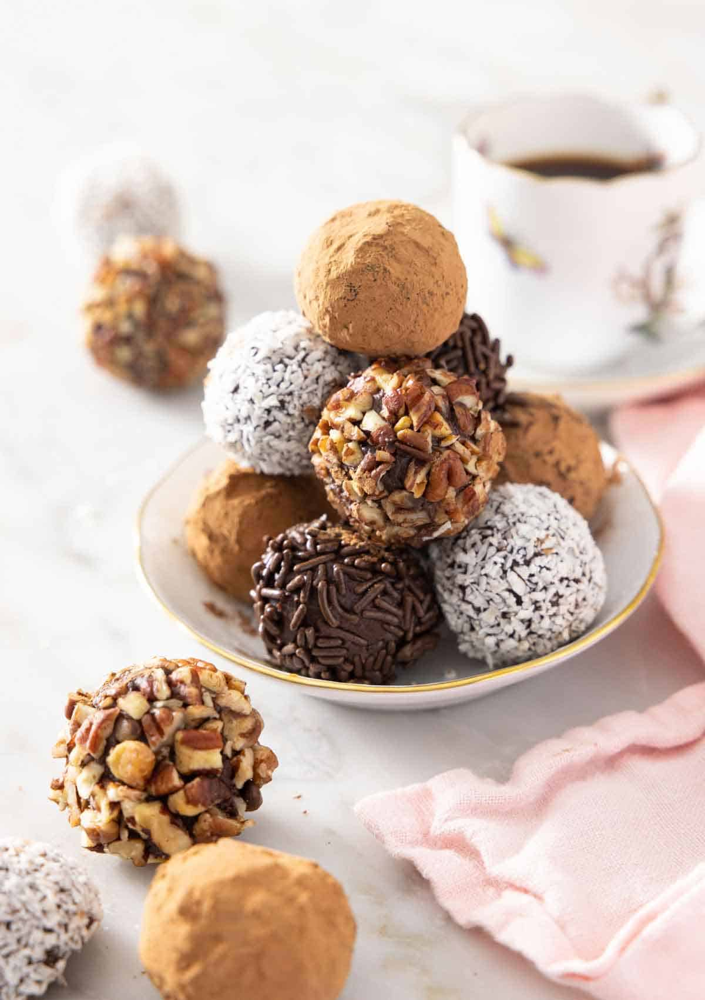

These Kitchen Sink Cookies are soft, chewy, and have the perfect balance of sweet and salty flavors. Full of chocolate chips, toffee bits, potato chips, and chopped pretzels, these cookies are loaded with everything but the kitchen sink! These cookies are so easy to customize and ready in 30 minutes.
Made with everything but the kitchen sink, these kitchen sink cookies are perfect for the odds and ends hanging out in the pantry. The point of these cookies is to add a little bit of everything to them, so they're sweet, salty, soft, chewy, and crisp. Each bite has a little bit of every flavor and texture, leading to the most delightful cookies.
Even better, these cookies freeze really well and make for a delicious edible gift. They're also really flexible when it comes to add-ins, so you can easily make them with whatever you have on hand. You won't regret making these cookies. They're so fun to make, and you get to clean out your pantry!
Sweet and delicious, this Edible Cookie Dough is a fun treat that you can eat straight from the bowl! So comforting and full of nostalgia, this recipe comes together quickly and easily with heat-treated flour and no eggs, so it’s safe for everyone to eat. It tastes just like real cookie dough!
If you’re someone who loves to sneak in a spoonful of raw cookie dough when making cookies, this edible cookie dough recipe is a safe and delicious way to enjoy cookie dough! It’s simple and only requires a handful of ingredients, and tastes just like the real deal. It also doesn’t take long to make so that you can satisfy your sweet tooth within minutes.
I may be biased, but I think everyone should have some of this cookie dough on hand or in the freezer. Not only is it delicious on its own, but you can also tuck it into some ice cream, cupcakes, brownies, or even roll up a few little balls to decorate the top of your cakes, bars, and cheesecakes.
what you need:
Rich, creamy, and indulgent, these homemade Chocolate Truffles are perfect for any occasion. These delightful little bites of chocolate are so easy to make and will melt in your mouth. Coat the truffles with cocoa, sprinkles, or nuts to make them look just like a bakery’s.
Made with only a handful of ingredients, these delicious no-bake chocolate truffles are smooth, fudgy, and luscious. Homemade truffles may seem a little intimidating as they’re always so expensive at the store, but they’re super easy to make. They are essentially bite-sized balls of chocolate ganache. There are so many ways to customize the coatings, making them the perfect homemade gift for the holidays. This easy truffle recipe is also the ultimate party treat, as you can make them ahead of time. Try making my bon bons recipe, homemade peppermint bark, or oreo cookie balls if you want another edible gift idea.
what you need